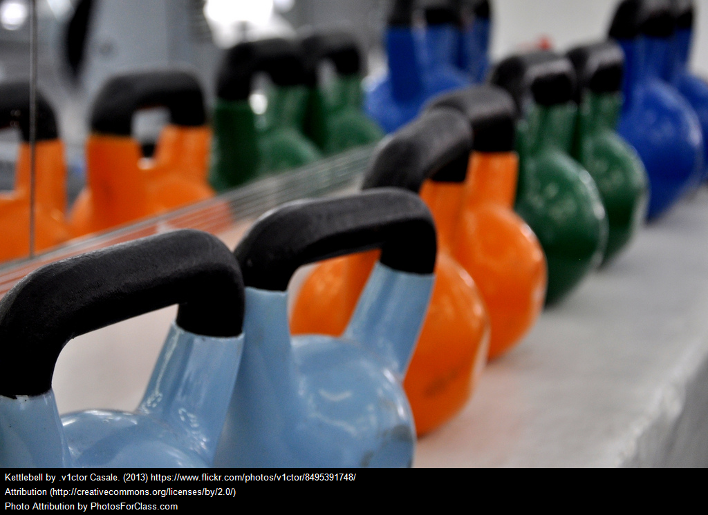

transportation
Astoria is served by the local E M R trains of the New York City Subway, which stop at the Steinway Street and 46th Street stations on the underground IND Queens Boulevard Line, as well as the N W trains, which run along the elevated BMT Astoria Line above 31st Street.[34]
The primary streets running north-south are Vernon Boulevard along the East River; 21st Street, a major traffic artery with a mix of residential, commercial and industrial areas; 31st Street; and Steinway Street (named for Heinrich Engelhard Steinweg (later Henry E. Steinway), founder of the piano company Steinway & Sons),[35] a major commercial street with many retail stores, and a very prominent Middle Eastern section between Astoria Boulevard and 28th Avenue, the area is full of Middle Eastern food restaurants which present some local types of food from Lebanon, Egypt and Morocco, most food in these restaurants is Halal to suit the Muslim residents who are main customers in this neighborhood.
Astoria is expected to be served by the Citywide Ferry Service.
Steinway street
Steinway Street is a major street in the borough of Queens in New York City, New York, in the United States. Steinway Street is 2.4 mile two-way street that runs north-south between Berrian Boulevard in Astoria and Northern Boulevard in Long Island City. South of the Grand Central Parkway, Steinway Street is a major commercial district that is the primary section of a Business improvement district called Steinway Astoria Partnership.[1]
Richard Hellmann, creator of Hellmann's mayonnaise, had his first big factory at 495 / 497 Steinway Street from 1915 to 1922. [2] In 1922, operations moved to a larger factory at 34-08 Northern Boulevard.[3]
Steinway Street is accessible by subway at the subway station of the same name (E M R trains). The Q101 bus travels Steinway Street from 20 Avenue to Northern Boulevard
Astoria park
Although widely known for its beautiful pool, the oldest and largest in the city, Astoria Park offers more than aquatic pleasures. Outdoor tennis courts, a track, a bandstand, multiple trails, basketball courts, and playgrounds lure visitors from the five boroughs and beyond. And the views! Sitting on the edge of the East River and resting between the Triborough Bridge and Hell Gate Bridge, the park offers shoreline sights and sounds that make the benches along its perimeter popular spots year-round.
Astoria Gyms

If you’re like most people, your New Year’s resolutions include getting in shape. Luckily, there’s no shortage of gyms and classes in Astoria to get you closer to your fitness goal.
Last year after giving up on running as my main form of exercise, I started my search for a more formal solution: a gym. I tried lots of places, including The Art of Fitness, Club Fitness, Planet Fitness, Yoga Agora, CrossFit Queens, CrossFit Dynamix, and Tone.